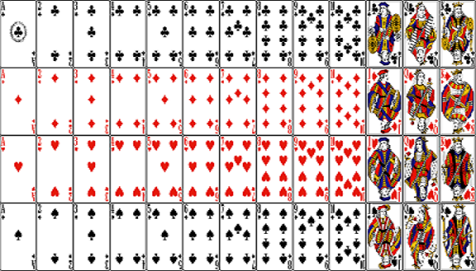
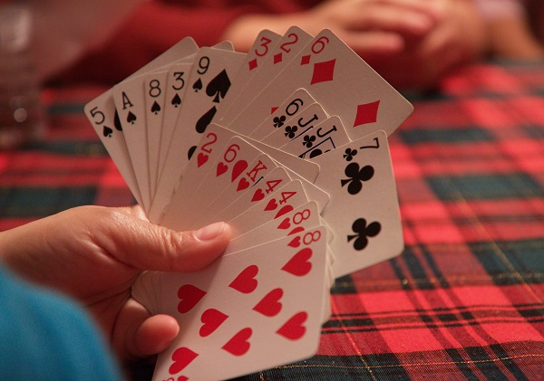

BLUFF
The main objective of the game is to get rid of all your cards before all the other players finish their cards.
- There are 52 cards in the deck excluding the joker card which is not necessary for the game.
- It can be played from minimum of 2 players up to 10 players.
- The cards are arranged in a rank from high to low in which A(highest), K (2nd highest), Q, J,10,9,8,7,6,5,4,3,2(lowest).
- bluff game can be played with family and friends.
- There is maximum 4 types of the same number or alphabet of a card.

image’s-link
HOW TO PLAY BLUFF
Firstly, the cards need to be well shuffled and then dividend into equal number with each other. Any player can decide who wants to start first till last and can be arranged in any order to start the game. The first player by placing a 1 or more card facing-down on the center of the table while declaring the rank of card. On top of that it can be either true or a lie about the card placed. Then next player has three options
-
Pass your chance
-
Play your chance
-
Call bluff
Pass your chance
In this player may choose not to play a card. If your chance is passed then you cannot play until the 1 round completes and can continue at 2nd time the round starts with the same set of cards. Once everybody says pass then the set of cards placed on the center of the table are kept aside. With that we need to start the next round whoever placed the last card gets to start first in the next round.
play your chance
If the first player places the cards, then second player can place his card even if the same card is available or not by the second player but player can still place a card by telling a lie.
Call by bluff
Suppose first player places his card then the second player believes he is telling a lie or the third player believes second player is telling a lie and so on. Then the second or any other player can call bluff in which they check whether the card is same as the player mentioned before placing. If the card rank is same as the player mentioned then which player called the Bluff has to pick all the cards placed on the table otherwise it's not the same then the player who placed wrong card has to pick all the cards. Whoever finishes their cards first is the winner and then continued by the other player until their card are over.

image’s-link
Strategy To Win the game
There are multiple strategies that we can use for wining few of the games .Here i would like to discuss two of my favourite strategies.
- Don’t keep on lying which makes you an easy target be more unpredictable so you do not get caught when anybody calls for bluff.
- Check when the player puts any rank card and you have 2 or 3 of those card then the player is mostly lying about the card. Example the player puts 2 kings and you have 3 kings it becomes obvious that he is lying and call out bluff.
| Strategy | Benifit |
|---|---|
| less prediction | more chance of winning |
| clever moves | greater the chance of winning |
| understand the players | easy to predict |
| less lie | finih cards earlier |